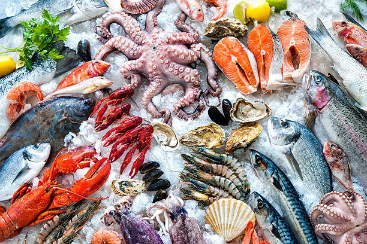
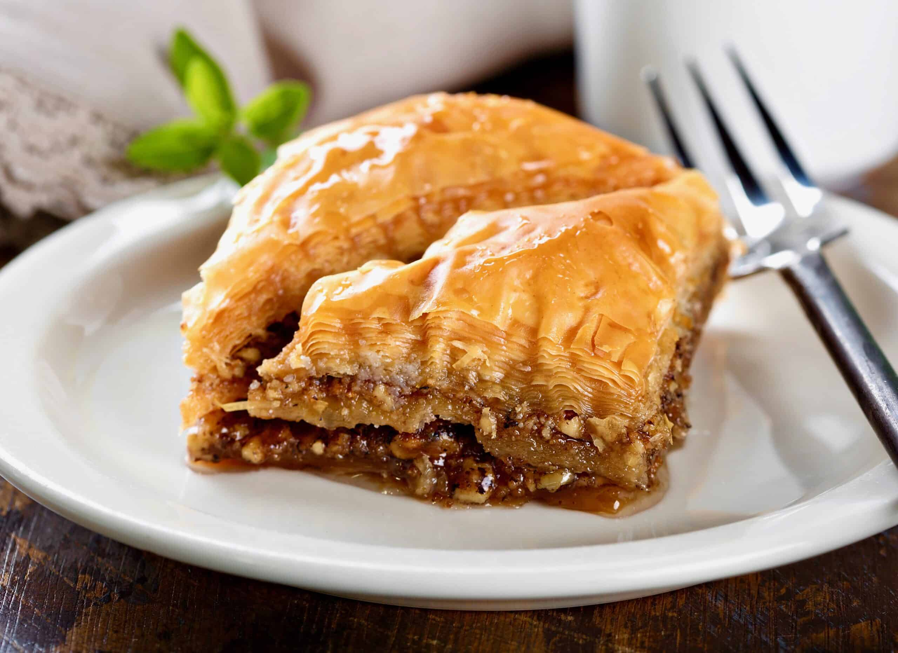
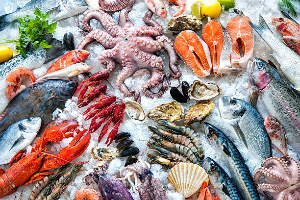
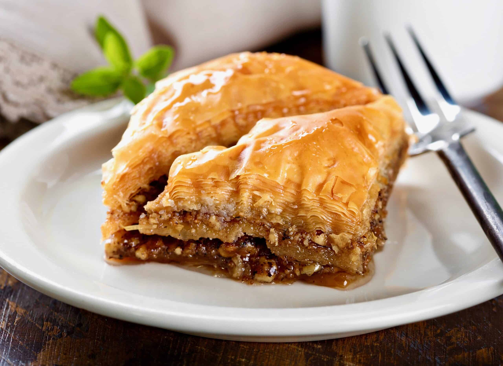

Topos
Greek cuisine places a strong emphasis on fresh vegetables, legumes, and grains. These are often used in a variety
of ways, from hearty casseroles to light salads. The famous Greek salad, or horiatiki, features tomatoes, cucumbers,
onions, olives, and feta cheese, seasoned simply with olive oil, oregano, and salt, allowing the ingredients to
shine. Grains, particularly wheat and barley, are foundational in dishes like pilaf and are also used to make
traditional Greek breads. Legumes, such as lentils, chickpeas, and fava beans, provide essential protein and are
often found in soups and dips like hummus and fava spread.

Psaria
Seafood plays a significant role in Greek coastal and island cuisine due to Greece’s long coastline and numerous
islands. Fish, octopus, and shellfish are typically grilled or baked, served with fresh lemon and herbs. A
traditional dish, psarosoupa, is a comforting fish soup made with white fish, vegetables, lemon, and olive oil,
capturing the essence of Greek seafood cooking. The proximity to the sea ensures that the fish is always fresh, and
simple cooking techniques highlight the natural sweetness of the seafood. In many coastal tavernas, diners are
encouraged to pick their own fish from the display, ensuring a truly fresh dining experience.

Glyka
Greek sweets and desserts are often influenced by both local traditions and the culinary heritage of the Ottoman
Empire. Honey, nuts, and spices form the basis of many sweets, with honey-soaked pastries like baklava and
galaktoboureko showcasing the Greek love for layered, syrupy treats. Desserts often include a blend of nuts and
aromatic spices, creating a rich, indulgent experience. Greek yogurt, renowned for its thick, creamy texture, is
another beloved dessert ingredient, typically served with honey and walnuts. This simple yet delicious combination
is both a staple dessert and breakfast item in Greek homes, emphasizing the Greek philosophy of enjoying food that
nourishes and delights.

More About Greece!

THE CULTURE
Scroll to top

Glyka
Greek sweets and desserts are often influenced by both local traditions and the culinary heritage of the Ottoman
Empire. Honey, nuts, and spices form the basis of many sweets, with honey-soaked pastries like baklava and
galaktoboureko showcasing the Greek love for layered, syrupy treats. Desserts often include a blend of nuts and
aromatic spices, creating a rich, indulgent experience. Greek yogurt, renowned for its thick, creamy texture, is
another beloved dessert ingredient, typically served with honey and walnuts. This simple yet delicious combination
is both a staple dessert and breakfast item in Greek homes, emphasizing the Greek philosophy of enjoying food that
nourishes and delights.

More About Greece!
THE CULTURE
Scroll to top